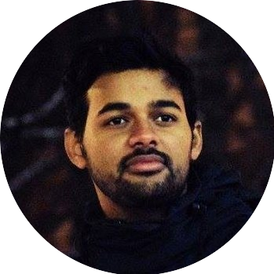
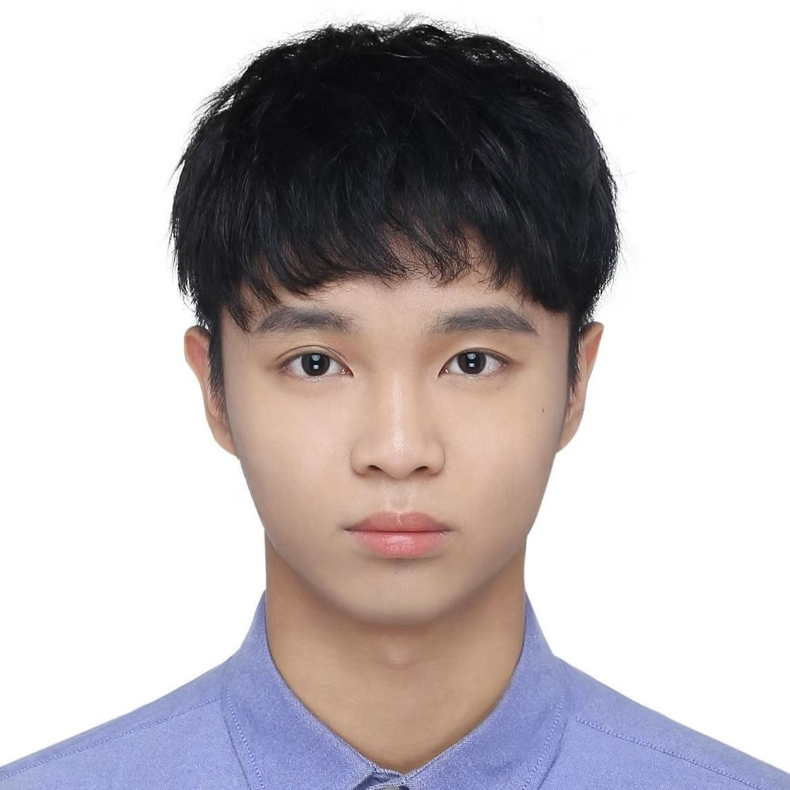
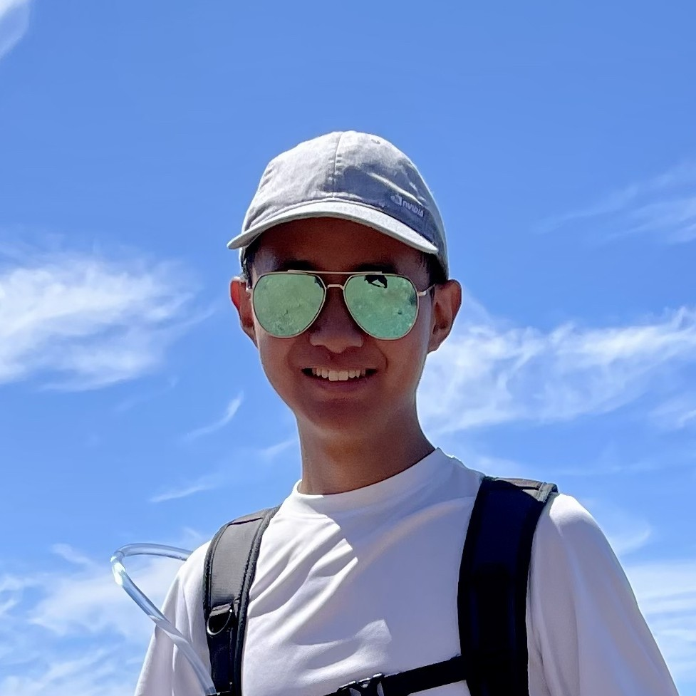

5th 3D Scene Understanding for Vision, Graphics, and Robotics
CVPR 2025 Workshop, Nashville TN, June 11th Morning, 2025
Overview
The developments in AI technology have spurred calls for next-generation AI, e.g., Embodied AI and General AI, which enables systems to physically interact with their environments for comprehensive tasks in a human-like manner. Towards this goal, researchers from diverse fields, e.g., computer vision, computer graphics, and robotics, have made separate efforts and made progress across various topics, including 3D representation (e.g., NeRF, Gaussian Splatting), foundation models (e.g., SAM(2), Stable (Video) Diffusion), datasets (e.g., Objaverse (XL), Open X-Embodiment), and end-to-end vision-language-action (VLA) models (e.g., RT-X), etc.
However, new fundamental questions arise about how to sustain a more comprehensive understanding of the environment, unite these efforts, and facilitate the future development of next-generation AI. For example, what is the role of traditional scene parsing/detection/localization in today’s development? How to leverage scene understanding techniques to improve the physical interaction? Could pure end-to-end models and scaling large-scale datasets work, or are intermediate representations, even symbolic ones more suitable for certain tasks?
This year’s focus will be exploring the fundamental aspects to enhance interaction between agents and 3D scenes in the new era of AI, promoting future directions and ideas to emerge within the next two to five years.
Invited Speakers
 |
|||
| Deva Ramanan (CMU) | Angel X. Chang (SFU) | Carl Vondrick (Columbia) | Chenfanfu Jiang (UCLA) |
 |
 |
||
| Iro Armeni (Stanford) | Kiana Ehsani (Vercept) | Guanya Shi (CMU) |
Tentative Schedule
- 08:45 am - 09:00 am Opening Remark: Siyuan Huang (BIGAI)
- 09:00 am - 09:30 am Invited talk: Deva Ramanan (CMU)
- 09:30 am - 10:00 am Invited talk: Angel X. Chang (SFU)
- 10:00 am - 10:30 am Invited talk: Carl Vondrick (Columbia)
- 10:30 am - 11:00 am Invited Talk: Chenfanfu Jiang (UCLA)
- 11:00 pm - 11:15 pm 🔥Challenge🔥 Winner Announcement!
- 11:15 am - 11:45 am Invited Talk: Iro Armeni (Stanford)
- 11:45 am - 12:15 pm Invited talk: Kiana Ehsani (Vercept)
- 12:15 pm - 12:45 pm Invited talk: Guanya Shi (CMU)
Organizers
 |
 |
 |
|
| Yixin Chen (BIGAI) | Baoxiong Jia (BIGAI) | Yao Feng (Stanford) | Songyou Peng (DeepMind) |
 |
 |
 |
 |
| Chuhang Zou (Amazon) | Sai Kumar Dwivedi (MPI) | Yixin Zhu (PKU) | Siyuan Huang (BIGAI) |
Challenge Organizers
|
 |
 |
||
| Baoxiong Jia (BIGAI) | Xiongkun Linghu (BIGAI) | Tai Wang (Shanghai AI Lab) |
Jingli Lin (SJTU) | Xiaojian Ma (BIGAI) |
Senior Organizers
 |
||
| Marc Pollefeys (ETH Zurich) | Derek Hoiem (UIUC) | Song-Chun Zhu (BIGAI, PKU, THU) |